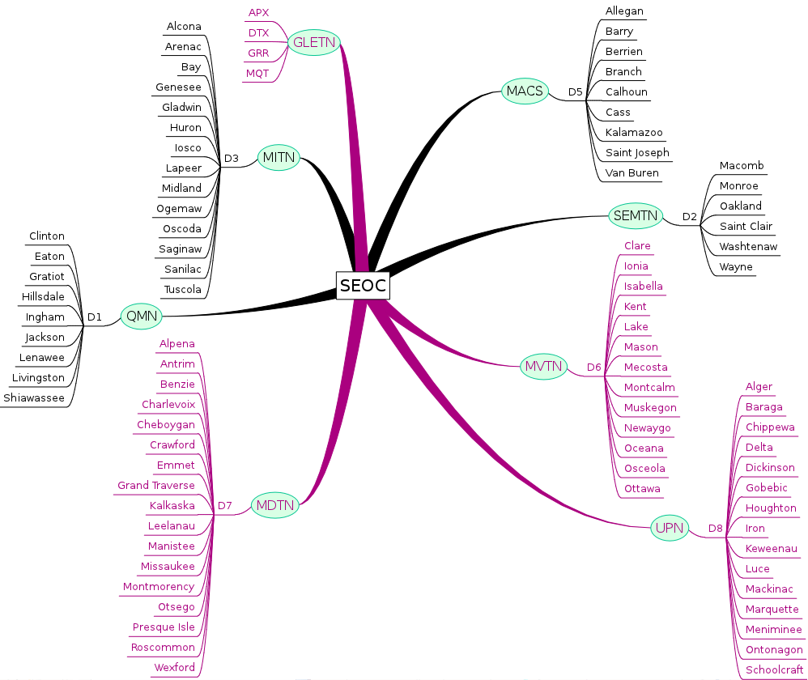

NTS to District Assignments
The following diagram illustrates the assignment of NTS nets to ARES Districts:

Traffic Flow
Figure F.1. Traffic Flow
Black lines indicate liaison with SEOC on 3.563 MHz, while violet lines indicate contact on 3.932 MHz.
For Official Use Only